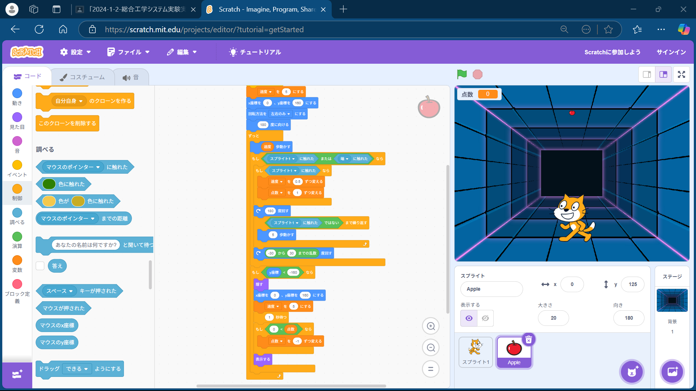

1週目のレポート ： 公大高専１年実習I-1
2b班38番 かわうそアーメン
第1週目
1-1 サイエンスアート
1.内容
スクラッチを使って線を書くプログラムを作り人それぞれの図形を描いた。
2.感想
小学校のころからscratchには何度か触れてきたため余裕をもって作業をできた。 作った図形は角度と線の長さがだんだん大きくなるように動かしたものを4つ重ねたものです。
1-2 ゲーム

1.内容
猫がリンゴをとるゲームを作り、それを自分でアレンジをした。
2.感想
初めに作ったままだとリンゴの動きが単調だと感じたのでブロック崩しのようにリンゴが猫や壁に当たると跳ね返るようにした。 そしてリンゴが猫に触れるたびに加速していくようにした。しかしそのままだとリンゴを逃しても大丈夫になってしまうので、 ある一定の高さより下にいくと、リンゴが消えて減点されるようにした。最近ゲーム作りはUnityでやってたため作る労力が 少なく楽だった。
1-3 ホームページ作成
私のホームページ
1.内容
GitHubにある既存のものを編集して自分のプロフィールを記載したホームページを作った。
2.感想
GitHubは同じ部活の人が使ってるなぁ、くらいで何も知らなかったが今回のようにホームページを作れるのかと思った。
各ページへのリンク
1週目のレポート
2週目のレポート
3週目のレポート
私のホームページ